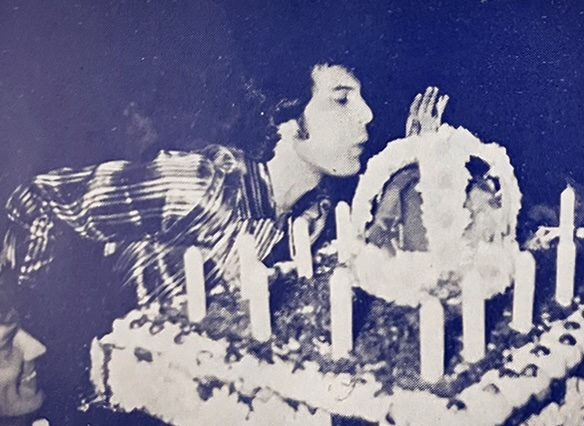
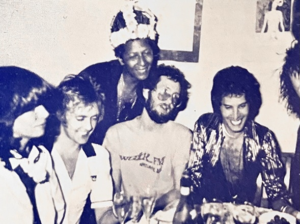

News of the Queen

Now, as for their schedule after the US tour, they'll be returning to the UK for Christmas to rest their battered bodies while reflecting on a busy year of touring and recording. The schedule for next year hasn't been decided yet. I'm sure they'll be discussing it thoroughly as the end of the year approaches. We hope they'll come to Japan next year.
It's been two years since their last live performance here, so I'm sure there are many people who haven't seen them in person. I'd love to see them on film, at least. They're currently working on a documentary film. Ever since I heard they filmed last year's free concert in Hyde Park, I've been wanting to see it, but I haven't heard much about it yet. Reportedly they'll be using this footage from Hyde Park along with some footage from a show they shot randomly for TV in London on October 6th, combining it into a single film. The October 6th concert will apparently be aired on British TV stations at the end of the year. Oh, how I envy them! Plus, they're doing two one-hour Queen shows on radio stations at Christmas, which makes my mouth water!
Incidentally, there is also a 33-minute film of the 1974 Rainbow concert, but the members of Queen didn't like it at all, so it was only shown once in the UK. I'd like to see that, too.
Now, on a different note, let me introduce a letter I received from the official Dutch fan club in the Netherlands:

I can picture Brian always considering his fans and worrying for them.
—Inouye